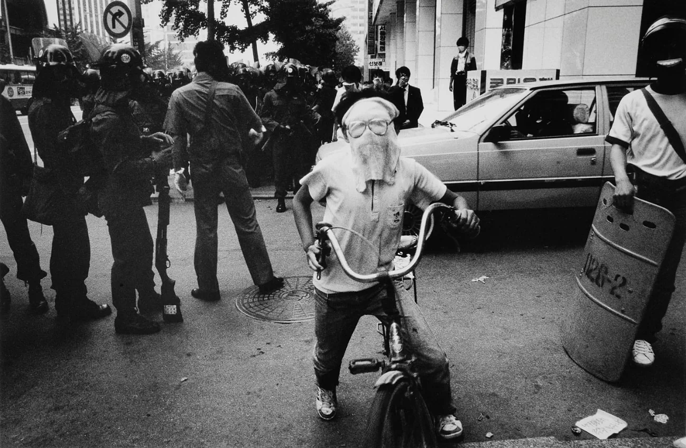
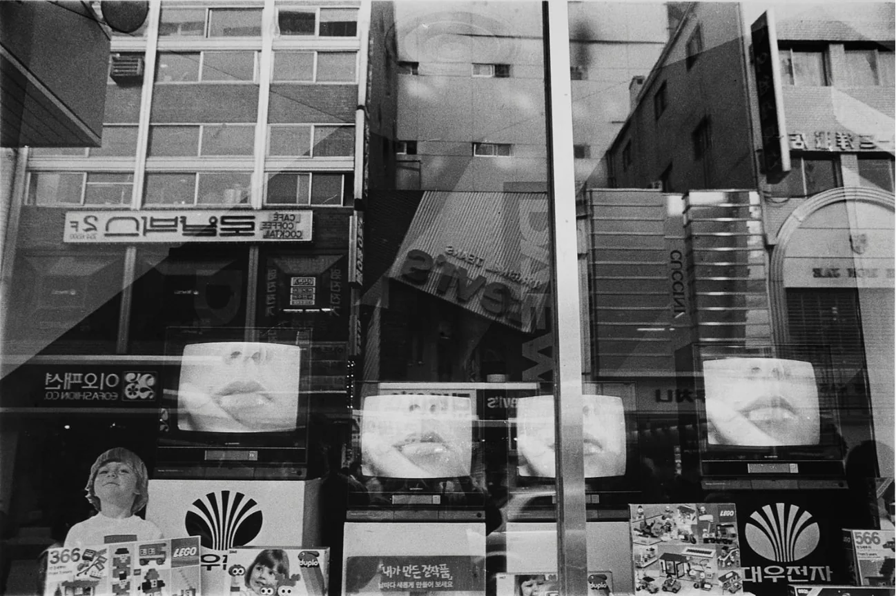
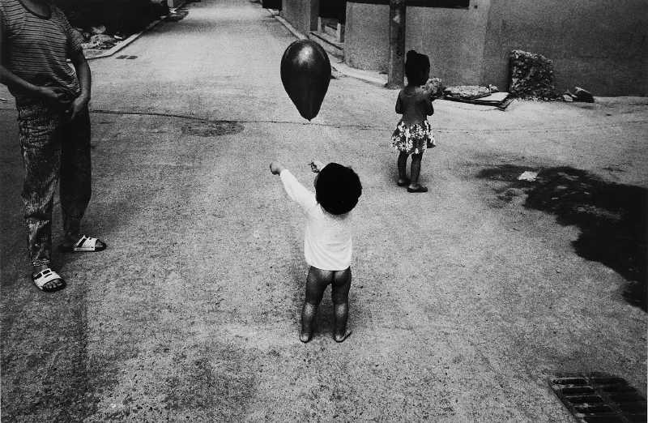
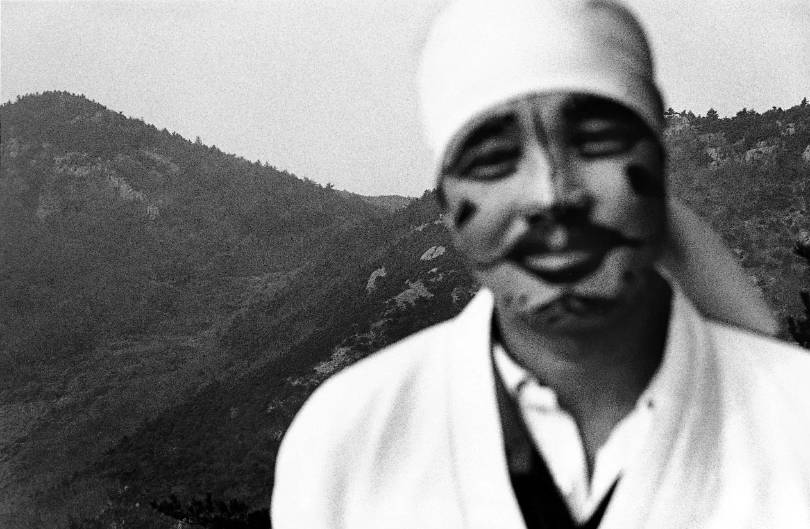
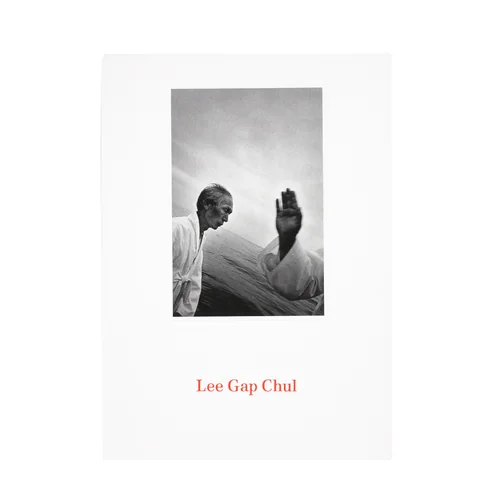
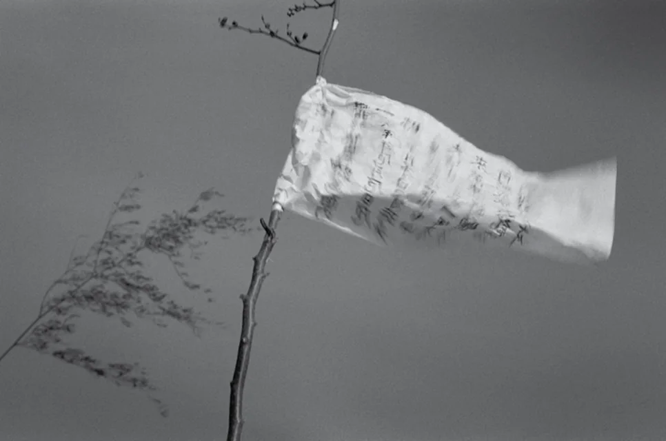

사진을 배우면 먼저 하지 말라는 것들이 있다. 수평을 무너뜨리지 말 것. 초점을 놓치지 말 것. 사람을 어정쩡하게 자르지 말 것. 이갑철의 사진은 그 금지 목록을 일부러 밟고 지나간다. 그런데 그 흔들림 안에서, 설명이 잘 되는 장면보다 더 오래 남는 한국의 얼굴이 튀어나온다.
위의 두 장을 보자. 왼쪽 노인은 고개를 젖히고 소리를 지른다. 카메라는 턱 밑까지 파고들어 얼굴을 아래에서 올려다본다. 오른쪽 사진은 수평선이 통째로 기울었고, 화면 끝에서 흰 소매의 손이 번지며 솟는다. 무슨 행사인지, 어디인지는 사진이 알려 주지 않는다. 그 대신 그 자리의 소리와 바람이 먼저 온다.
거리에서 출발했다
이갑철은 1959년 경상남도 합천에서 태어나 진주에서 자랐다. 1984년 신구전문대학 사진과를 졸업했다. 그를 무속과 제의를 찍는 사진가로만 기억한다면 절반만 아는 셈이다. 그의 초기 작업은 도시의 거리에 있었다.
1979년부터 1984년까지 제주를 찍은 《제주-천구백팔십》이 있고, 1984년에는 주한미군이 드나드는 거리를 담은 《거리의 양키들》이 있다. 이어 도시에서 사람과 사람, 사람과 구조물 사이의 관계를 본 《도시의 이미지》가 나왔고, 1985년부터 1990년까지 이 땅의 불평등과 소외감을 다룬 《타인의 땅》이 이어졌다. 제 땅인데도 남의 땅처럼 느껴지는 시대의 공기가 제목에 들어 있다.


이 시기 사진에서도 화면은 이미 반듯하지 않다. 사람은 가장자리에 걸려 잘리고, 유리창에는 두세 겹의 거리가 포개진다. 기울어진 프레임과 거친 화면은 의례 사진에서 갑자기 생긴 스타일이 아니었다. 낯선 거리의 불안을 붙잡던 감각이 먼저 있었다.

《충돌과 반동》
1990년, 이갑철은 《충돌과 반동》을 시작했다. 전통 행사를 찾아다니며 굿과 장례, 제사, 대보름, 농촌 공동체의 의례를 찍었다. 작업은 1990년대부터 2000년대 초반까지 이어졌고, 그를 대표하는 연작이 됐다.
소재만 보면 민속 기록 같다. 그런데 사진은 기록처럼 정리돼 있지 않다. 누가 무엇을 하는지 한눈에 보이는 컷이 드물다. 프레임은 기울고, 인물은 가장자리에서 잘리고, 검은 그림자가 화면의 절반을 먹는다. 사진이 붙잡은 것은 의례의 절차보다 몸과 땅과 의례가 부딪히는 순간의 압력에 가깝다. 한과 신명처럼 말로 옮기기 어려운 것들이 그 압력 속에서 올라온다.

왜 이렇게 흔들렸나
필름을 쓰는 사람이라면 이 사진들을 보며 먼저 실수를 떠올릴지 모른다. 수평이 맞지 않고, 초점은 엉뚱한 데 가 있고, 입자는 거칠다. 그런데 이 어긋남은 한두 장의 사고가 아니다. 연작 전체에 걸쳐 되풀이된다.
위의 사진에서 초점은 사람의 얼굴을 비껴 뒤쪽 산에 맞았다. 얼굴은 형체만 남고, 산은 또렷하다. 정보로 치면 거꾸로 된 사진이다. 그런데 그 부연 얼굴이 오히려 사람이 아닌 무언가처럼 보인다. 흑백도 같은 쪽으로 일한다. 색을 걷어 내면 옷의 무늬나 하늘의 색 같은 설명이 빠지고, 빛과 어둠의 덩어리만 남는다.
잘 찍은 사진의 규칙은 장면을 잘 알아보게 하려고 있다. 이갑철의 사진은 알아보는 일을 뒤로 미룬다. 그 사이에 보는 사람의 몸이 먼저 반응한다. 화면은 자주 기울고 흔들리는데, 감정은 이상하게 더 정확하게 닿는다.

사람에서 땅으로
《충돌과 반동》 다음에 이갑철은 사람의 의례에서 조금 물러났다. 《기(氣) / Energy》에서 그는 산과 바람과 나무, 땅 자체에서 보이지 않는 기운을 찾았다. 사람이 빠진 자리에도 흔들림은 남는다.

2019년 한미사진미술관 삼청별관에서 연 《적막강산-도시 징후》에서는 다시 도시로 돌아왔다. 어둡고 흔들린 감각이 이번에는 도시의 징후를 향했다. 2025년 12월에는 1979년부터 2000년까지의 작업을 다시 묶은 《이갑철 다른 풍경론 1979-2000》이 열렸다.
지금 다시 보는 이유
휴대전화 카메라는 수평을 알아서 맞추고, 흔들림을 알아서 지우고, 어두운 곳도 밝게 펴 준다. 선명한 사진은 그 어느 때보다 흔하다. 그런데 그렇게 찍은 사진 가운데 몇 장이나 오래 기억에 남을까?
이갑철의 사진은 사건을 설명하기보다, 사건이 지나간 자리의 온도를 남긴다. 그의 사진에서 한국적인 것은 소재보다 압력에 가깝다. 설명되지 않는 감정이 화면 바깥에서 계속 밀고 들어온다. 필름 카메라를 들고 수평과 초점 사이에서 망설여 본 적이 있다면, 이 사진들 앞에서 그 망설임을 한 번 다르게 생각해 볼 만하다.